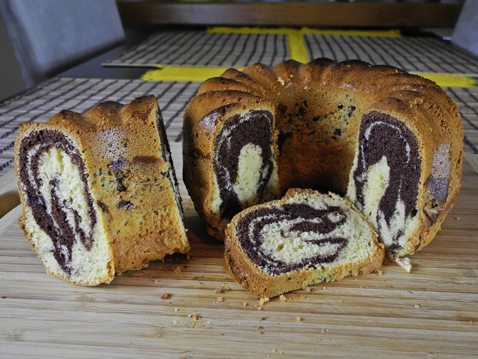
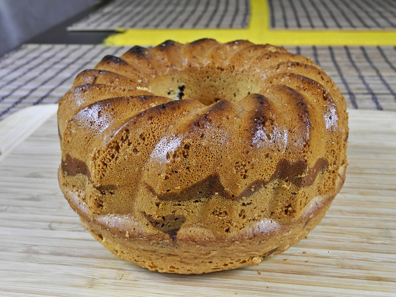
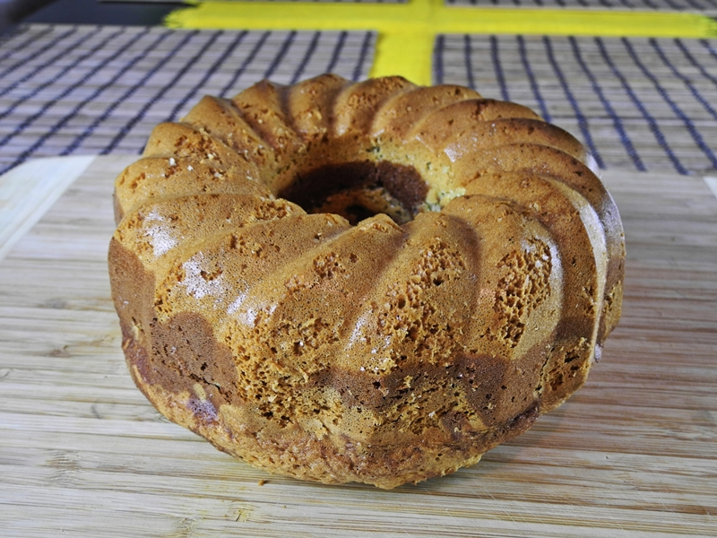
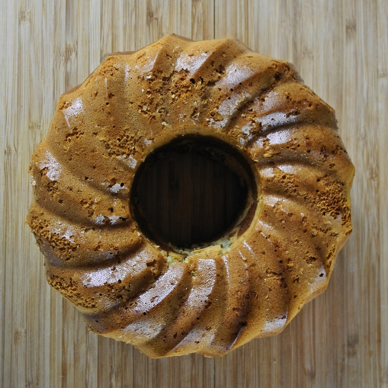

Babka marmurkowa
Wielkanoc, to Święto które nie może się obyć bez... BABKI! Przepis sprawdzony - baba wychodzi puszysta, ale nie sucha, a najważniejsze, że chyba nie da się jej zepsuć. :-)
Składniki:
- 200 g mąki tortowej
- 200 g cukru
- 200 g masła
- 4 jajka
- 1 i 1/2 łyżeczki proszku do pieczenia
- 2 łyżki gorzkiego kakao
Przygotowanie:
Masło topimy w rondelku i odstawiamy do ostudzenia. Białka oddzielamy od żółtek i ubijamy na sztywną pianę. Do żółtek dodajemy cukier i ucieramy, następnie wlewamy przestudzone rozpuszczone masło, mąkę oraz proszek do pieczenia i energicznie miksujemy. Na koniec dodajemy ubite białka i mieszamy na wolnych obrotach - nie za długo, tylko do wymieszania składników, by zachować puszystość białek. Połowę formy odlewamy do oddzielnej miski, dodajemy do niej kakao i mieszamy łyżką do uzyskania jednolitego koloru.
Babkę piekę w silikonowej formie z kominkiem - nie ma potrzemy jej dodatkowego natłuszczania. Ciasto do formy wlewamy naprzemiennie - jasne ciasto, ciemne, jasne, ciemne i na koniec znowu jasne.
Pieczemy 40 minut w piekarniku nagrzanym do 200ºC (180ºC - termoobieg).
Smacznego!
  